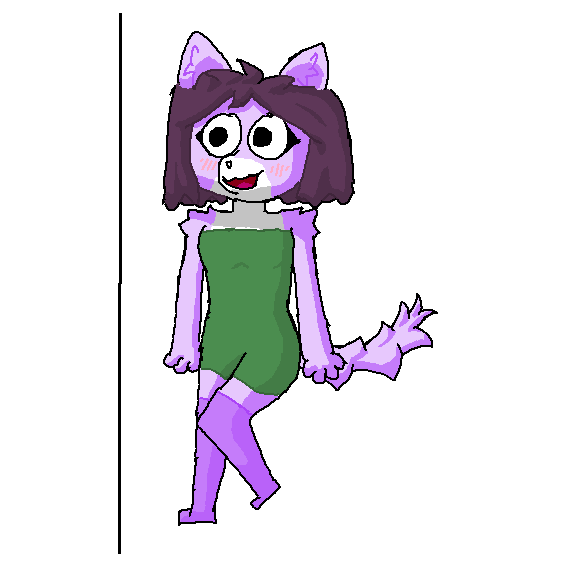
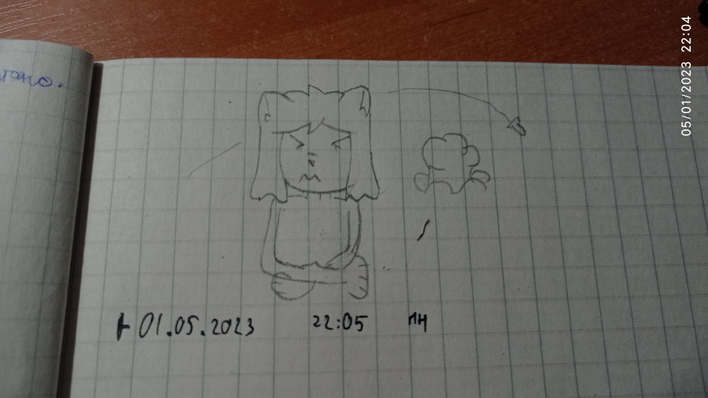
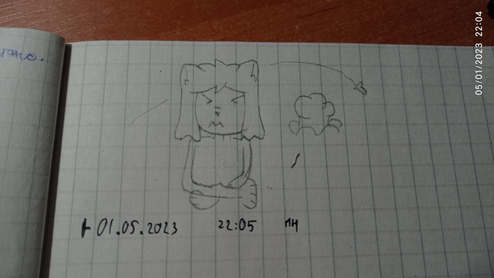

Alexa
 [Tip: do not scale vision only in head, otherwise, it could be unproportionally, first of all, set up your pose skelet, and start to draw sketch] Profile:Sex: Female
Biological class: Cat & Dog
Country where born: Fur (now Life)
Age: 22
Date of born: 15.12.16M
Date of created: 28.01.2022
Work: Hairdresser
Parents:
Mother: Abigail
Father: Max
Currency plan: 4th plan(~1260S) from 5th plan(~420S)
Intrestings: hairdresser, magazines, redfunner
Traits: Adorable (with her clients), Exciting (when she feels attraction to herself), Jealous (when object of attraction is unfocused on her)
Alexa was in poor family. Her father broke with her mother, Abigail. She all time was upset, but her daughter supported her, and Abigail continue to live, but in poorer situation. Yes, they're getting subsides from the country, but there're not enought to get out from poority.
Alexa listened in the girls' classmates. Alexa - "They're talking about attraction of each boy in our classroom. They talked about their beauty and what they will be doing with them at night. When I was young, I thought, it's disgusting, but lately even me was with them. I talked them about attraction, and started to discuss, is it good choice. Also was fights for a classmate boy, and it was very spectacular. I think, my life is lonely, and isn't intresting without dramas"
Alexa was in different schools: first was technical, second was art and finally was in poorer school with to save her money. Her dad, Max thought, what technical school is luxury for perspective, but lately, he decided, what she wasn't improved yet, and he decided to reattach to the another school, in art school, where Kiwuar learned. Lately, her mother, Abigail broke up with her dad permanently, and decided, what need to save their money. They decided to reattach again to more cheap school.
One time, Alexa heard about the secret material of one boy, what loves to send for him crush [No!], and she found this, but kept it. Lately, she invited all girls in classroom to watch the materials. She was shocked with it, but other girls was so excited, she has never seen that. Lately, girls was locked her with one classmate boy, and he started to [I said no!], but she [Ok, my fault].
One time, Alexa saw Kiwuar. He passed by her. She was excited, and told to classmate girls and they're adviced her to write a lovely letter at Valentine cycle. She was so excited of him, what she forgot to write her name. When he met her, she thought about him a lot. Alexa - "His eyes, his haircut and even his character is looks for me soo attractive!". In the next break, she didn't found him. She has tried to find Kiwuar again, but she didn't.
When she was child, her mom started to learn to make a ponytails, and learned, how to interact with it. She was intrested in, and started to visit to libraries and to hairdresses haircut magazines for the recently updates of mode. Lately, when she reached 17, she started met with Yogan, he was impressed with her beauty and rent for her hairdresser. Yogan - "Alexa hold in her soul secret of the whole world, but, I broke with her, because, as she think "You're looking for another partner! Then you think, what I'm not your! Then I'm quit!". Tried to explain for her, but she didn't listened me. So... yeah, but hey! She forgot about duration of rent, and it durate less that 3 years"
Alexa was beautiful as well, but poorly. She had a lot of relationship history. One of them was with only meetings, one of them was with visiting to her house, but no one weren't permanently with her.
One time, Alexa heard something, but she still decided to go to the hairdressers. Her client cares about the situation and said, the war is coming. Alexa decided to support the army with silvers, and declared about the preposition to make a haircut as a donation for the army. Many people are there to help their country to resist. They made some progress, and later, the country returned all territory. That is great news, so Alexa was so happy, what decided to have a party, but her preposition was declined because the enemy would have an opportunity to occupy again.
When the war ended, Alexa's Idea to celebrate the victory was finally accepted. At the party, she decided to celebrate as well as possible, so she courted some interesting people. Alexa(in a flirtatious tone) - "You're looking so cute, I want to touch you very well…". Some of them denied her step. Walt is the only person who accepts her turn. Walt(also in a flirtatious tone) - "Why only you? I also want to touch you. Your fur is so soft". Alexa - "Thanks, your eyes are also so pretty". Walt - "I want to see you inside…". After that talk, he grabbed Alexa in the room and... [As you can see by predictions of her actions I must say, I don't want to continue this]
Gallery:


 

 [by @Uki7UqvfzqQJ36j]
[by @Uki7UqvfzqQJ36j]